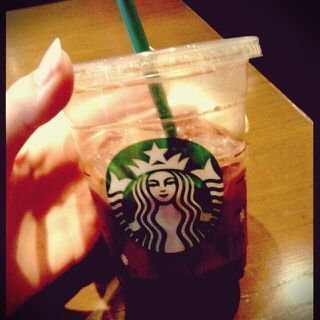

はいなぁ〜(*´ω｀*) こんにちは〜 。
ろってぃーだよっ..
かずみだよう.
クレープ持ってんだよう♪
確か かずみんはカスタードとホイップω
ろってぃーは 小豆とホイップとバニラアイス ω
そーいや 一昨日の夜。
かずみ、あみ、ちはる、ひな。そして まあやで
ずっと 『 人狼ゲーム 』 してました^^
人狼ゲーム好きなこと
何回かblogに書いたことあるけど
『 人狼ゲーム 』って知ってますぅ？
わりと流行っていて、TVでも色んな芸能人が
集まってやってたりする番組もあったりするんです...
それが 我々は大好きなのであります！！！
TVゲームではございません ♪
完結に言いますと、
嘘をついて人の嘘を見破るゲームであります☆
説明しますと、長くなるので
気になる方は 是非ネットで...ヾ(´▽｀*)ゝ
よく「人狼ゲームの番組出たいねっ！」
って話します ＼(^-^)／
この遊びをずっと継続した結果
人のちょっとした 目線や動きで嘘いてるのが
分かる様になったよね！ って誰か言ってた〜(о´∀`о)
うんっ、確かに 笑 わぁーーー ))))
そして 『リアル人狼ゲーム』ってゆう映画を
観てましたヾ(´▽｀*)ゝ
はぁーーーい＼(^o^)／
って感じでねっ、 質問返しやりますねん♪
☆せいらりん推しなんですけど
ろってぃーのことが好きになっちゃいました。
2推しとして、ろってぃー推しになってもいいですか？
Rotty夢☆に入っていいですか？
★あw 本当にありがとう（つд；*)
もちろんですっ 嬉しゅうキモチ..
是非 Rotty夢☆としてこれから
よろちくお願いしますっ(о´∀`о)
☆７枚目ヒット祈願の滝修行,かずみん行けなかったから
代役として行きたかったぁ？
★あ〜 (´；ω；`) かずみん行けなかったもんねっ..
もちろんっ、 ろってぃー行ってきてって
言ってくれてたら 行ってたよ！
そりゃぁ〜 だってヒットしてほしいもん ))
☆MUSIC FAIR,Rottyならああいう場で何する？
★そうそう。
「ろってぃー高速ベロやったらよかったのにぃ〜」
とゆうコメントが結構きてました (´▽`)
ほんまやなぁ〜 高速つながりで みおなの隣で
やればよかったんだね あははん♪
☆この頃、アンダーさん 乃木どこ出演頻度
増えてきてる？
★ねっ(*^^*) 確かにねん♪
☆握手会とかで 変顔リクエストしたら
やってくれるかな(^o^)？
★意外と 照れちゃうんやけど頑張って すんでっ *^^*
初恋の人は今でも。MV撮影の時
教会の中で ☆ミキラキラ
翼 ビュン
これはぁ〜 モカ。

今日もblog見てくれてありがとね(*^^*)
大好きだよ？
ぢゃあねぇ〜ん ヾ(´▽｀*)ゝ
ぐっばい。 のし